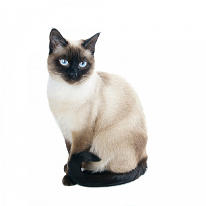

Описание породы
Данная порода кошек мало отличается по своим характеристикам от
британской короткошерстной кошки, что вызывает горячие споры у заводчиков и владельцев этих
плюшевых созданий. Основное отличие породы скотиш-страйт заключается в более пропорциональном,
утонченном теле с развитыми мускулами.

Описание породы
Русские голубые кошки отличаются своим изяществом и благородством внешнего вида, их мягкая
короткая шерсть голубого цвета с серебристым отливом оригинально сочетается с необыкновенными
зелеными глазами. Кошки имеют прекрасный прямой профиль, форма мордочки клиновидная, череп
плоский и длинный, специалистами не приветствуется круглая четырехугольная форма головы.
Описание породы
Существует масса легенд появления этой породы, согласно которым мейн-куны то произошли от союза
кошки и енота, то от союза кошки и рыси, но это лишь легенды. Согласно официальной версии
мейн-куны стали результатом долгой работы природы над признаками кошек, именно суровые условия
жизни повлияли на формирование сильных, выносливых, крупных кошек, способных выживать при низких
температурах, имеющих сильный иммунитет и устойчивость к болезням.

Описание породы
Современные британские короткошерстные кошки – это хорошо сложенные животные от среднего до
крупного размера с мощным телом, коренастыми ногами и крепкими округлыми лапами. Вес взрослого
животного колеблется от 3 до 7 кг, коты крупнее кошек. Круглую голову венчают широко
поставленные уши средних размеров.

Описание породы
Внешние черты и характеристики тайской кошки: это сильные животные, компактных размеров, форма
головы круглая, уши маленькие, близко посажены друг ко другу. Глаза раскосые миндалевидные или
лимоновидные, имеют великолепный голубой цвет. Окрас шерсти у тайской кошки колор-поинт, который
подразумевает наличие маски на морде, темные лапы и темный хвост.
Описание породы
Крупные великолепные кошки – шаузи имеют яркий нестандартный внешний вид. Кошки – шаузи являются
результатом скрещивания обычной домашней кошки и дикого камышового кота. Именно дикий родитель
подарил кошкам -шаузи великолепный яркий внешний вид, а название новой породы было взято от
латинского «Felis chaus», что в переводе означает камышовый кот.